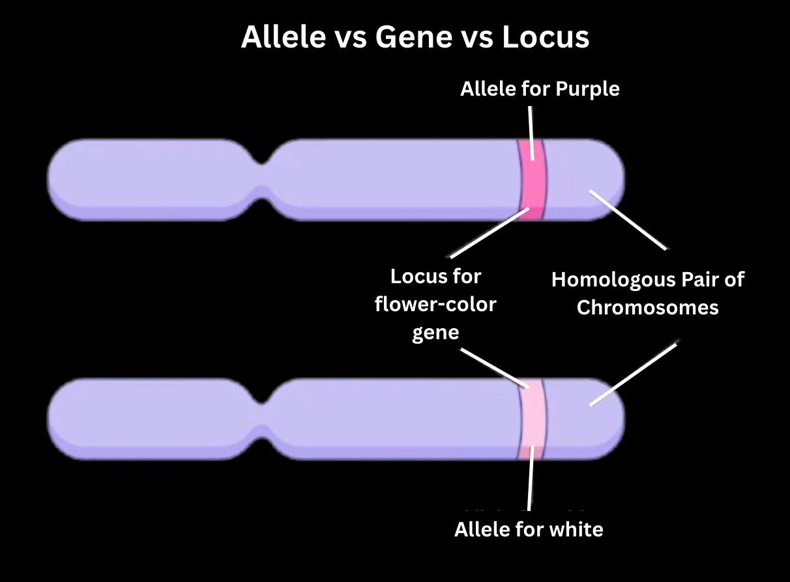
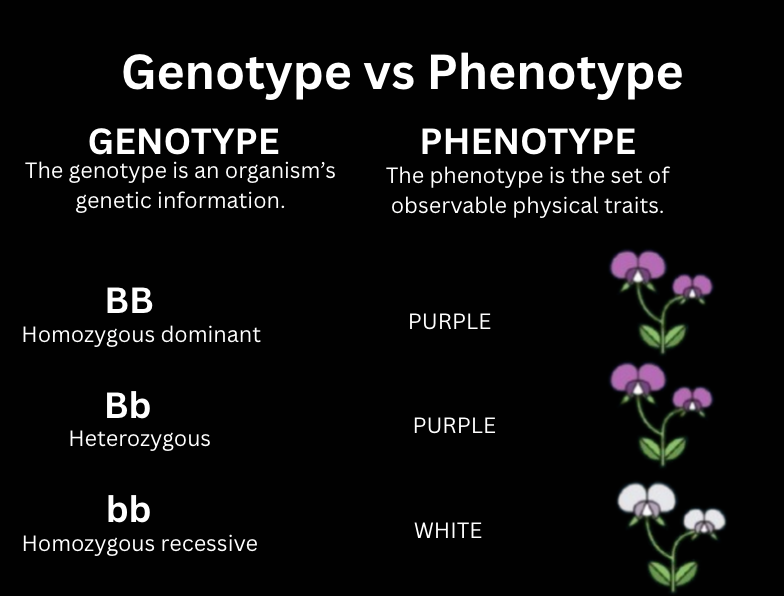
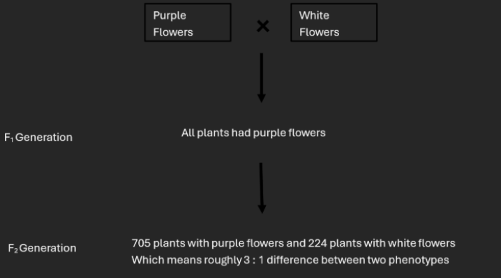
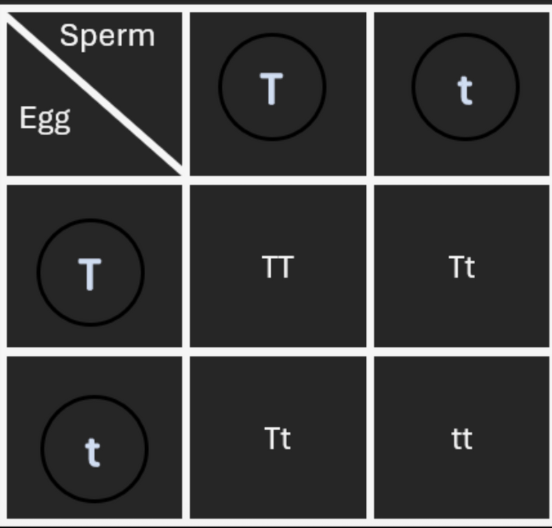
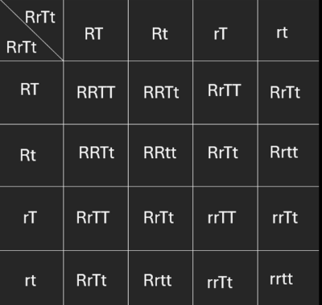

Principles of Heredity were first formulated by Gregor Mendel, now known as the father of modern genetics. Mendel formulated these by cultivating a considerable number of garden peas in his garden. Although he conducted the experiment even before the discovery of chromosomes, the basic laws of genetics supported the discovery. These laws are now known as Mendelism. They can be explained briefly as:
A feature that varies among individuals of a population is called a character. Variants in these characters are known as traits, which are heritable. The externally observable traits of an organism is known as phenotype.
These heritable factors are identified into genes in modern genetics. A gene is a basic unit by which genetic information is passed down from parent to offspring. It is a nucleotide sequence of DNA residing usually at the specific locus on a particular chromosome and contributes to the development of one or more traits by coding for specific proteins or peptides.
locusLocus or Loci is fixed position/s in a chromosome. The alternate versions of genes, which are called alleles, reside on the same locus of different chromosomes. Alleles vary in their sequence of nucleotides. This change can affect the function of the protein encoded by the gene and thus the phenotype of the organism. Homozygous means having two identical alleles and Heterozygous means having two different alleles in a given gene.
While phenotype is externally observed, genotype is the basis of it. Genotype is the genetic make-up or set of alleles of an organism. An Individual’s genotype could be either homozygous or heterozygous based on the alleles for that specific gene.
The allele which determines a phenotype of an organism masking the other allele is known as the dominant gene. The allele getting masked is known as recessive gene. A dominant allele shows its characters in homozygous or heterozygous state; the trait is known as dominant trait. A recessive trait is only expressed as a phenotype ONLY in the homozygous recessive state.


Mendel's Experiments
Mendel tracked these characters and found out that these occurred in two distinct, contrasting phenotype forms, such as tall stem length vs. short stem length or purple flower vs. white flower. These traits are referred to as contrasting traits.
Mendel used pure breeding (aka true breeding) varieties for his experiments. These pure plants are obtained by self-pollinating them for many generations to bring out the identical alleles. Mendel cross-pollinated contrasting traits containing pure-bred garden peas for his experiment and this is called hybridization.
Parental Generation is known as P generation. Plant progeny resulting from this is known as First Filial generation (F1 generation), and the progeny that results from self-pollination or cross-pollination in between F1 generation results in F2 generation.
An organism that is heterozygous with respect to a SINGLE gene of interest resulting from a cross between parents having homozygous condition for DIFFERENT alleles of specific gene is referred to as a monohybrid.
An organism that is heterozygous with respect to two genes of interest resulting from a cross between parents having homozygous conditions for different alleles of TWO specific genes is referred to as a dihybrid.
Breeding an organism having unknown genotype for a specific dominant trait with an organism having homozygous recessive condition for the same specific trait is called test cross.

Punnett Squares
A Punnett Square is a graphical representation of the possible genotypes of an offspring arising from a particular cross or a breeding event.

You can see from the Punnett Square that when crossing Two Tt (Tall) plants we get a ratio of 1 : 2 : 1 for the genotypes TT, Tt, tt respectively. TT plants are Homozygous Tall plants, Tt are Heterozygous Tall plants, tt are Short Plants. 3 : 1 is the phenotype ratio as there are three tall plants and one short plant.
We can write this as
Genotypic Ratio
TT : Tt : t 1 : 2 : 1
Phenotypic Ratio
Tall : Short 3 : 1
In a dihybrid cross, two characteristics can be passed from parents to the offsprings as a package. Kind of like a Monohybrid Cross but with two characteristics.
Consider the following Punnet Square:

Consider, R is for round seed and r is for wrinkled seeds, T is for tall plants and t is for short plants. As you can see from the Punnett Square there are phenotypes of,
Tall plant with round seeds (RRTT, RrTT, RrTt)
Short plant with round seeds (RRtt, Rrtt)
Tall plant with wrinkled seeds (rrTT, rrTt)
Short plant with wrinkled seeds (rrtt)
Phenotype ratios are
Tall Round : Short Round : Tall Wrinkled : Short Wrinkled
9 : 3 : 3 : 1
Mendel's Laws of Inheritance
Mendel's First Law of Inheritance also known as the Law of Segregation. According to this Mendelian Law, heritable characteristics are determined by two heritable factors known as alleles. During gamete formation, the heritable factors separate and get into each of the gametes formed. This is known as Mendel’s first law of inheritance.
Mendel’s Second Law of Inheritance also known as the Law of Independent Assortment. This law states that alleles that separate will pair up independently during gamete formation. As a result, two or more genes assort independently irrespective of the other. But, according to our current studies, this law only applies when we consider that genes are located on different chromosomes or they are located far apart on the same chromosome. The reason being that genes located closely to each other may be linked together (i.e. both genes are linked to form one segment). Thus inhibiting its ability to sort independently as they have to move as a pair.
Probability Laws
As you might already know, probability ranges from 0 to 1. Let’s connect it to our gamete formation. Consider a plant with Tt genotype, so it will produce two eggs with a certain characteristic.
It has a 0.5 or \(\frac{1}{2}\) probability of carrying the dominant allele and also has 0.5 or \(\frac{1}{2}\) probability of carrying the recessive allele.
As you can tell from the previous one, all the probabilities (probabilities of all outcomes) for an event will add up to one.
e.g.: consider the first one 0.5 + 0.5 = 1.
There are events that do not depend on other events. These are called independent events. So if you want to find out when an outcome in one event occurs with another certain outcome in the other event, you can simply do this bymultiplying the probabilities. But, remember this is only when those events are independent.
Consider Mendel’s monohybrid test as an example:
An egg has a 0.5 of probability to have T allele, and a sperm has 0.5 of probability to have T allele. If you want to find the probability of both having T allele you just multiply 0.5 with 0.5. So the answer is 0.25
Probability of one of two or more mutually exclusive events will occur is calculated by adding their individual probabilities. This is the addition or sum rule of probability.
There are two possible mutually exclusive ways for producing F2 heterozygotes.
The dominant allele come from the egg and the recessive allele from the sperm; the probability of the event = \(\frac{1}{4}\)
The recessive allele from the egg and the dominant allele from the sperm; the probability of the event = \(\frac{1}{4}\)
So, the probability of getting an F2 heterozygote is ¼ + ¼ = ½
Q: Find the Probability of BbRr genotype when crossing two BbRr plants if B is dominant allele for blue seeds and R is the dominant allele for round seeds.
Let's do this together:
B is the dominant and b is the recessive allele; same for R and r.
So, according to the laws we know BB has ¼ , bb has ¼ and Bb has ½ chance in the F1 generation. Same goes for RR, rr and Rr.
These two are independent events since they both don’t depend on each other. So we use the multiplication rule to find the probability. By using multiplication rule ½ × ½ = ¼